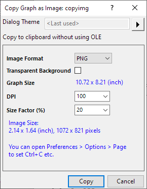
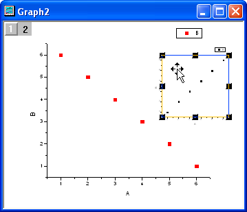
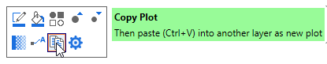

Diagramme in Origin kopieren und einfügen
CopyPaste-Graph
Sie können Diagrammseiten und einzelne Diagrammlayer innerhalb von Origin kopieren und einfügen. Einige Operationen fügen Bilder von Diagrammen ein, während andere bearbeitbare Diagramme einfügen.
Die Diagrammseite als Bild kopieren und einfügen
- Klicken Sie auf die Titelleiste des Diagrammfensters, um die Diagrammseite auszuwählen.
- Wählen Sie im Menü Bearbeiten: Diagramm als Bild kopieren.
oder
Klicken Sie auf die Schaltfläche Diagramm als Bild kopieren  auf der Minisymbolleiste des Diagramms.
auf der Minisymbolleiste des Diagramms.
oder
Klicken Sie mit der rechten Maustaste auf das Diagramm und wählen Sie im Kontextmenü Kopieren: Diagramm als Bild kopieren.
oder
Aktivieren Sie das Diagrammfenster und drücken Sie Strg + Alt + J.
- Im Dialog Diagramm als Bild kopieren können Sie das Bildformat und die Bildgröße benutzerdefiniert anpassen. Klicken Sie dann auf die Schaltfläche Kopieren.
- 
- Wählen Sie das Fenster des Zieldiagramms, des Ziellayouts oder die Zielarbeitsblattzelle† aus und dann Bearbeiten: Einfügen oder klicken Sie mit der rechten Maustaste auf die leere Fläche, um Einfügen: Einfügen oder drücken Sie Strg + V.
† Hinweis: Seit Origin 2018 erzeugt jedes in eine Arbeitsblattzelle eingefügte Diagramm eine Popup-Vorschau, wenn Sie mit dem Cursor über die jeweilige Arbeitsblattzelle fahren, sei es ein bearbeitbares Diagramm, ein Diagramm, das als verknüpftes oder statisches Bild eingefügt wurde, ein aus einer Datei eingefügtes Bild oder eine Sparkline.
Die Diagrammseite als ein bearbeitbares Diagramm kopieren und einfügen
Es gibt zwei geringfügig unterschiedliche Methoden, dies zu erreichen:
- Aktivieren Sie das Diagrammfenster und wählen Sie Bearbeiten: Seite kopieren oder klicken Sie mit der rechten Maustaste auf das Diagramm und wählen Sie Bearbeiten: Seite kopieren im Kontextmenü.
- Klicken Sie auf das Zielfenster (Diagramm, Layoutseite oder Arbeitsblatt) und wählen Sie Bearbeiten: Link einfügen.
Diese Methode platziert ein verknüpftes "Diagrammobjekt" im Zielfenster. Wenn Sie doppelt auf das Quelldiagramm klicken, wird es zur Bearbeitung in den Vordergrund geholt. Jede Änderung, die Sie an diesem Diagramm machen, wird in dem verknüpften Diagrammobjekt wiedergegeben.
Alternativ hierzu:
- Klicken Sie mit der rechten Maustaste auf das Zielfenster (nur Layout oder Arbeitsblatt) und wählen Sie Diagramm hinzufügen. Wählen Sie Ihr Quelldiagramm aus der Liste des Diagrammbrowsers und klicken Sie auf OK.
- Wenn das Zielfenster ein Arbeitsblatt ist, wird auf diese Weise das Diagramm in das Arbeitsblattfenster eingebettet (es ist kein alleinstehenden Diagrammfenster mehr). Wenn Sie auf das Diagramm im Arbeitsblattfenster doppelt klicken, öffnet sich ein bearbeitbares Diagrammfenster. Führen Sie Ihre Bearbeitung durch, und klicken Sie dann auf die Schaltfläche Schließen
 in der oberen rechten Ecke des angezeigten Fensters, um Ihre Bearbeitung anzuwenden.
in der oberen rechten Ecke des angezeigten Fensters, um Ihre Bearbeitung anzuwenden.
- Wenn das Zielfenster ein Layoutfenster ist, wird der Zeiger ein Diagrammsymbol. Ziehen Sie ein (in der Größe veränderbares) Rechteck mit dem Diagrammzeiger auf und lassen Sie die Maus los, um ein verknüpftes Diagrammobjekt zu der Layoutseite hinzuzufügen. Wenn Sie doppelt auf das Quelldiagramm klicken, wird es zur Bearbeitung in den Vordergrund geholt. Jede Änderung, die Sie an diesem Diagramm machen, wird in dem verknüpften Diagrammobjekt wiedergegeben.
Ein Diagrammlayer als bearbeitbares Diagramm kopieren und einfügen
Beachten Sie, dass die Diagrammseite und der Diagrammlayer eindeutig unterscheidbare Objekte sind (siehe Elemente des Diagrammlayers anpassen).
Um einen Diagrammlayer, einschließlich Beschriftungen und Daten, zu kopieren und einzufügen:
- Wählen Sie den Diagrammlayer, den Sie kopieren möchten, indem Sie in einen leeren Bereich des Layers klicken.

- Wählen Sie aus dem Hauptmenü Bearbeiten: Kopieren, klicken Sie mit der rechten Maustaste und wählen Sie Kopieren im Kontextmenü oder drücken Sie STRG + C.
- Klicken Sie in das Zieldiagrammfenster. (Hinweis: Die angeklickte Stelle wird zur oberen linken Ecke des eingefügten Layers.)
- Wählen Sie Bearbeiten: Einfügen, klicken Sie mit der rechten Maustaste und wählen Sie Einfügen im Kontextmenü oder drücken Sie Strg + V. Ein bearbeitbares Diagramm(layer) wird in das Zieldiagrammfenster eingefügt. Beachten Sie, dass ein neuer Diagrammlayer zu dem Diagrammfenster hinzugefügt wurde.
- 
 |
Um Layer in einem Diagramm mit mehreren Layern auszuwählen, drücken Sie Strg oder Shift, während Sie auf die Layersymbole in der oberen linken Ecke der Diagrammseite klicken.
|
Diagramme in andere Diagrammlayer kopieren und einfügen
Um ein Diagramm zu kopieren und in einen anderen Layer oder eine andere Diagrammseite einzufügen:
- Klicken Sie auf die Zeichnung, um die Zeichnung auszuwählen. Wenn die ausgewählte Zeichnung Teil einer Gruppe ist, wird die gesamte Gruppe ausgewählt.
- Drücken Sie Strg+C oder klicken Sie auf die Schaltfläche Zeichnung kopieren auf der Minisymbolleiste.
- Klicken Sie auf den Ziellayer oder das Diagrammfenster und drücken Sie STRG+V.
- 
Beachten Sie, dass dies für eine begrenzte Anzahl von Diagrammtypen funktioniert, zumeist begrenzt auf die Kategorie Einfache 2D.